Describe the electric field within a conductor at equilibrium
Describe the electric field immediately outside the surface of a charged conductor at equilibrium
Explain why if the field is not as described in the first two objectives, the conductor is not at equilibrium
So far, we have generally been working with charges occupying a volume within an insulator. We now study what happens when free charges are placed on a conductor. Generally, in the presence of a (generally external) electric field, the free charge in a conductor redistributes and very quickly reaches electrostatic equilibrium. The resulting charge distribution and its electric field have many interesting properties, which we can investigate with the help of Gauss’s law and the concept of electric potential.
The Electric Field inside a Conductor Vanishes
If an electric field is present inside a conductor, it exerts forces on the free electrons (also called conduction electrons), which are electrons in the material that are not bound to an atom. These free electrons then accelerate. However, moving charges by definition means nonstatic conditions, contrary to our assumption. Therefore, when electrostatic equilibrium is reached, the charge is distributed in such a way that the electric field inside the conductor vanishes.
If you place a piece of a metal near a positive charge, the free electrons in the metal are attracted to the external positive charge and migrate freely toward that region. The region the electrons move to then has an excess of electrons over the protons in the atoms and the region from where the electrons have migrated has more protons than electrons. Consequently, the metal develops a negative region near the charge and a positive region at the far end ([link]). As we saw in the preceding chapter, this separation of equal magnitude and opposite type of electric charge is called polarization. If you remove the external charge, the electrons migrate back and neutralize the positive region.
Polarization of a metallic sphere by an external point charge . The near side of the metal has an opposite surface charge compared to the far side of the metal. The sphere is said to be polarized. When you remove the external charge, the polarization of the metal also disappears.
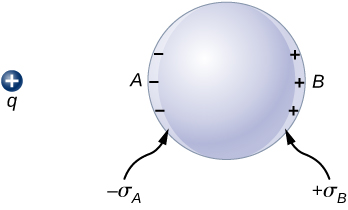
The polarization of the metal happens only in the presence of external charges. You can think of this in terms of electric fields. The external charge creates an external electric field. When the metal is placed in the region of this electric field, the electrons and protons of the metal experience electric forces due to this external electric field, but only the conduction electrons are free to move in the metal over macroscopic distances. The movement of the conduction electrons leads to the polarization, which creates an induced electric field in addition to the external electric field ([link]). The net electric field is a vector sum of the fields of and the surface charge densities and This means that the net field inside the conductor is different from the field outside the conductor.
In the presence of an external charge q, the charges in a metal redistribute. The electric field at any point has three contributions, from and the induced charges and Note that the surface charge distribution will not be uniform in this case.
The redistribution of charges is such that the sum of the three contributions at any point P inside the conductor is
Now, thanks to Gauss’s law, we know that there is no net charge enclosed by a Gaussian surface that is solely within the volume of the conductor at equilibrium. That is, and hence
Charge on a Conductor
An interesting property of a conductor in static equilibrium is that extra charges on the conductor end up on the outer surface of the conductor, regardless of where they originate. [link] illustrates a system in which we bring an external positive charge inside the cavity of a metal and then touch it to the inside surface. Initially, the inside surface of the cavity is negatively charged and the outside surface of the conductor is positively charged. When we touch the inside surface of the cavity, the induced charge is neutralized, leaving the outside surface and the whole metal charged with a net positive charge.
Electric charges on a conductor migrate to the outside surface no matter where you put them initially.
To see why this happens, note that the Gaussian surface in [link] (the dashed line) follows the contour of the actual surface of the conductor and is located an infinitesimal distance within it. Since everywhere inside a conductor,
Thus, from Gauss’s law, there is no net charge inside the Gaussian surface. But the Gaussian surface lies just below the actual surface of the conductor; consequently, there is no net charge inside the conductor. Any excess charge must lie on its surface.
The dashed line represents a Gaussian surface that is just beneath the actual surface of the conductor.
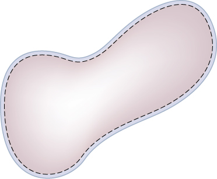
This particular property of conductors is the basis for an extremely accurate method developed by Plimpton and Lawton in 1936 to verify Gauss’s law and, correspondingly, Coulomb’s law. A sketch of their apparatus is shown in [link]. Two spherical shells are connected to one another through an electrometer E, a device that can detect a very slight amount of charge flowing from one shell to the other. When switch S is thrown to the left, charge is placed on the outer shell by the battery B. Will charge flow through the electrometer to the inner shell?
No. Doing so would mean a violation of Gauss’s law. Plimpton and Lawton did not detect any flow and, knowing the sensitivity of their electrometer, concluded that if the radial dependence in Coulomb’s law were , would be less than [footnote]. More recent measurements place at less than [footnote], a number so small that the validity of Coulomb’s law seems indisputable.
A representation of the apparatus used by Plimpton and Lawton. Any transfer of charge between the spheres is detected by the electrometer E.
The Electric Field at the Surface of a Conductor
If the electric field had a component parallel to the surface of a conductor, free charges on the surface would move, a situation contrary to the assumption of electrostatic equilibrium. Therefore, the electric field is always perpendicular to the surface of a conductor.
At any point just above the surface of a conductor, the surface charge density and the magnitude of the electric field E are related by
To see this, consider an infinitesimally small Gaussian cylinder that surrounds a point on the surface of the conductor, as in [link]. The cylinder has one end face inside and one end face outside the surface. The height and cross-sectional area of the cylinder are and , respectively. The cylinder’s sides are perpendicular to the surface of the conductor, and its end faces are parallel to the surface. Because the cylinder is infinitesimally small, the charge density is essentially constant over the surface enclosed, so the total charge inside the Gaussian cylinder is . Now E is perpendicular to the surface of the conductor outside the conductor and vanishes within it, because otherwise, the charges would accelerate, and we would not be in equilibrium. Electric flux therefore crosses only the outer end face of the Gaussian surface and may be written as , since the cylinder is assumed to be small enough that E is approximately constant over that area. From Gauss’ law,
Thus,
An infinitesimally small cylindrical Gaussian surface surrounds point P, which is on the surface of the conductor. The field is perpendicular to the surface of the conductor outside the conductor and vanishes within it.
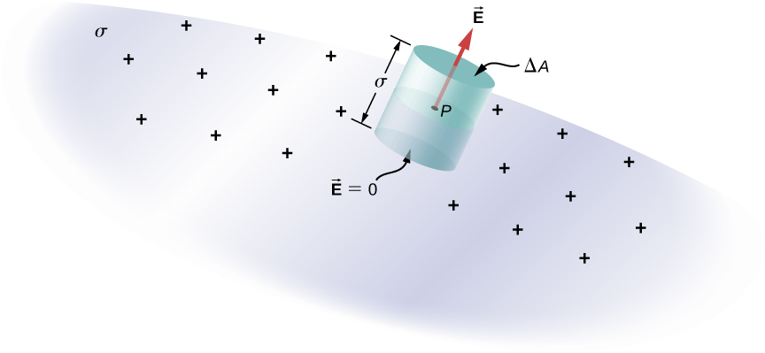
Electric Field of a Conducting Plate
The infinite conducting plate in [link] has a uniform surface charge density . Use Gauss’ law to find the electric field outside the plate. Compare this result with that previously calculated directly.
A side view of an infinite conducting plate and Gaussian cylinder with cross-sectional area A.
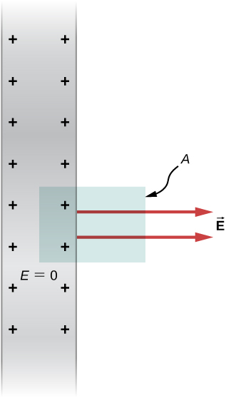
Strategy
For this case, we use a cylindrical Gaussian surface, a side view of which is shown.
Solution
The flux calculation is similar to that for an infinite sheet of charge from the previous chapter with one major exception: The left face of the Gaussian surface is inside the conductor where so the total flux through the Gaussian surface is EA rather than 2EA. Then from Gauss’ law,
and the electric field outside the plate is
Significance
This result is in agreement with the result from the previous section, and consistent with the rule stated above.
Electric Field between Oppositely Charged Parallel Plates
Two large conducting plates carry equal and opposite charges, with a surface charge density of magnitude as shown in [link]. The separation between the plates is . What is the electric field between the plates?
The electric field between oppositely charged parallel plates. A test charge is released at the positive plate.
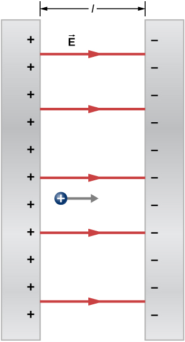
Strategy
Note that the electric field at the surface of one plate only depends on the charge on that plate. Thus, apply with the given values.
Solution
The electric field is directed from the positive to the negative plate, as shown in the figure, and its magnitude is given by
Significance
This formula is applicable to more than just a plate. Furthermore, two-plate systems will be important later.
A Conducting Sphere
The isolated conducting sphere ([link]) has a radius R and an excess charge q. What is the electric field both inside and outside the sphere?
An isolated conducting sphere.
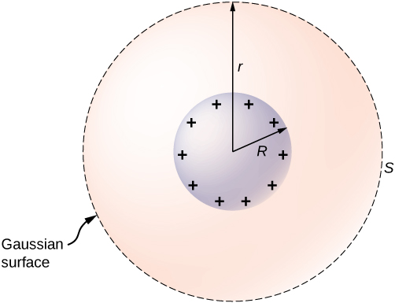
Strategy
The sphere is isolated, so its surface change distribution and the electric field of that distribution are spherically symmetrical. We can therefore represent the field as . To calculate E(r), we apply Gauss’s law over a closed spherical surface S of radius r that is concentric with the conducting sphere.
Solution
Since r is constant and on the sphere,
For , S is within the conductor, so and Gauss’s law gives
as expected inside a conductor. If , S encloses the conductor so From Gauss’s law,
The electric field of the sphere may therefore be written as
Significance
Notice that in the region , the electric field due to a charge q placed on an isolated conducting sphere of radius R is identical to the electric field of a point charge q located at the center of the sphere. The difference between the charged metal and a point charge occurs only at the space points inside the conductor. For a point charge placed at the center of the sphere, the electric field is not zero at points of space occupied by the sphere, but a conductor with the same amount of charge has a zero electric field at those points ([link]). However, there is no distinction at the outside points in space where , and we can replace the isolated charged spherical conductor by a point charge at its center with impunity.
Electric field of a positively charged metal sphere. The electric field inside is zero, and the electric field outside is same as the electric field of a point charge at the center, although the charge on the metal sphere is at the surface.
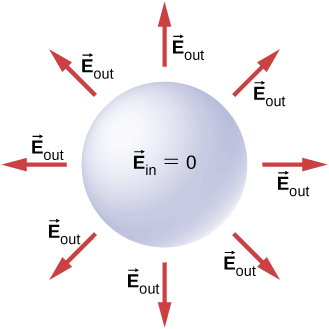
Check Your Understanding How will the system above change if there are charged objects external to the sphere?
If there are other charged objects around, then the charges on the surface of the sphere will not necessarily be spherically symmetrical; there will be more in certain direction than in other directions.
For a conductor with a cavity, if we put a charge inside the cavity, then the charge separation takes place in the conductor, with amount of charge on the inside surface and a amount of charge at the outside surface ([link](a)). For the same conductor with a charge outside it, there is no excess charge on the inside surface; both the positive and negative induced charges reside on the outside surface ([link](b)).
(a) A charge inside a cavity in a metal. The distribution of charges at the outer surface does not depend on how the charges are distributed at the inner surface, since the E-field inside the body of the metal is zero. That magnitude of the charge on the outer surface does depend on the magnitude of the charge inside, however. (b) A charge outside a conductor containing an inner cavity. The cavity remains free of charge. The polarization of charges on the conductor happens at the surface.
If a conductor has two cavities, one of them having a charge inside it and the other a charge the polarization of the conductor results in on the inside surface of the cavity a, on the inside surface of the cavity b, and on the outside surface ([link]). The charges on the surfaces may not be uniformly spread out; their spread depends upon the geometry. The only rule obeyed is that when the equilibrium has been reached, the charge distribution in a conductor is such that the electric field by the charge distribution in the conductor cancels the electric field of the external charges at all space points inside the body of the conductor.
The charges induced by two equal and opposite charges in two separate cavities of a conductor. If the net charge on the cavity is nonzero, the external surface becomes charged to the amount of the net charge.
Summary
The electric field inside a conductor vanishes.
Any excess charge placed on a conductor resides entirely on the surface of the conductor.
The electric field is perpendicular to the surface of a conductor everywhere on that surface.
The magnitude of the electric field just above the surface of a conductor is given by .
Key Equations
Definition of electric flux, for uniform electric field
Electric flux through an open surface
Electric flux through a closed surface
Gauss’s law
Gauss’s Law for systems with symmetry
The magnitude of the electric field just outside the surface of a conductor
Conceptual Questions
Is the electric field inside a metal always zero?
Under electrostatic conditions, the excess charge on a conductor resides on its surface. Does this mean that all the conduction electrons in a conductor are on the surface?
No. If a metal was in a region of zero electric field, all the conduction electrons would be distributed uniformly throughout the metal.
A charge q is placed in the cavity of a conductor as shown below. Will a charge outside the conductor experience an electric field due to the presence of q?
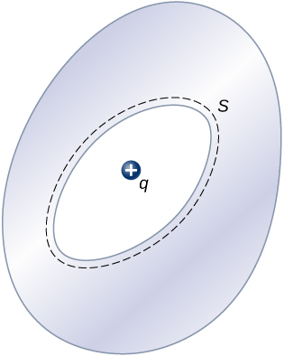
The conductor in the preceding figure has an excess charge of . If a point charge is placed in the cavity, what is the net charge on the surface of the cavity and on the outer surface of the conductor?
Since the electric field is zero inside a conductor, a charge of is induced on the inside surface of the cavity. This will put a charge of on the outside surface leaving a net charge of on the surface.
Problems
An uncharged conductor with an internal cavity is shown in the following figure. Use the closed surface S along with Gauss’ law to show that when a charge q is placed in the cavity a total charge –q is induced on the inner surface of the conductor. What is the charge on the outer surface of the conductor?
A charge inside a cavity of a metal. Charges at the outer surface do not depend on how the charges are distributed at the inner surface since E field inside the body of the metal is zero.
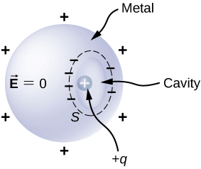
An uncharged spherical conductor S of radius R has two spherical cavities A and B of radii a and b, respectively as shown below. Two point charges and are placed at the center of the two cavities by using non-conducting supports. In addition, a point charge is placed outside at a distance r from the center of the sphere. (a) Draw approximate charge distributions in the metal although metal sphere has no net charge. (b) Draw electric field lines. Draw enough lines to represent all distinctly different places.
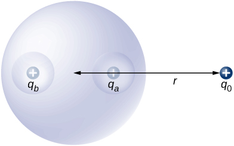
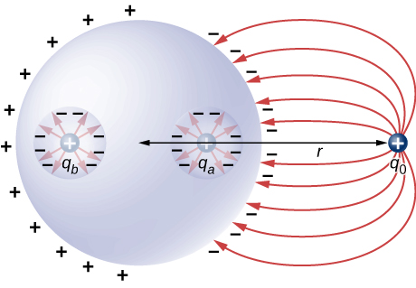
A positive point charge is placed at the angle bisector of two uncharged plane conductors that make an angle of See below. Draw the electric field lines.
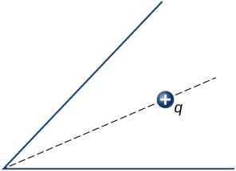
A long cylinder of copper of radius 3 cm is charged so that it has a uniform charge per unit length on its surface of 3 C/m. (a) Find the electric field inside and outside the cylinder. (b) Draw electric field lines in a plane perpendicular to the rod.
a. Outside: ; Inside ; b.
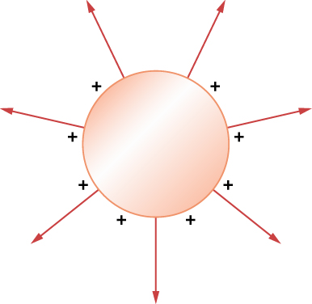
An aluminum spherical ball of radius 4 cm is charged with of charge. A copper spherical shell of inner radius 6 cm and outer radius 8 cm surrounds it. A total charge of is put on the copper shell. (a) Find the electric field at all points in space, including points inside the aluminum and copper shell when copper shell and aluminum sphere are concentric. (b) Find the electric field at all points in space, including points inside the aluminum and copper shell when the centers of copper shell and aluminum sphere are 1 cm apart.
A long cylinder of aluminum of radius R meters is charged so that it has a uniform charge per unit length on its surface of . (a) Find the electric field inside and outside the cylinder. (b) Plot electric field as a function of distance from the center of the rod.
a. E inside equals 0; b.
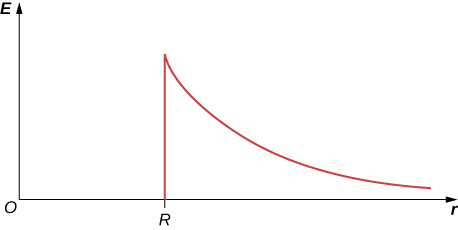
At the surface of any conductor in electrostatic equilibrium, Show that this equation is consistent with the fact that at the surface of a spherical conductor.
Two parallel plates 10 cm on a side are given equal and opposite charges of magnitude The plates are 1.5 mm apart. What is the electric field at the center of the region between the plates?
Two parallel conducting plates, each of cross-sectional area , are 2.0 cm apart and uncharged. If electrons are transferred from one plate to the other, what are (a) the charge density on each plate? (b) The electric field between the plates?
The surface charge density on a long straight metallic pipe is . What is the electric field outside and inside the pipe? Assume the pipe has a diameter of 2a.
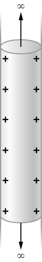
, inside since
A point charge is placed at the center of a spherical conducting shell of inner radius 3.5 cm and outer radius 4.0 cm. The electric field just above the surface of the conductor is directed radially outward and has magnitude 8.0 N/C. (a) What is the charge density on the inner surface of the shell? (b) What is the charge density on the outer surface of the shell? (c) What is the net charge on the conductor?
A solid cylindrical conductor of radius a is surrounded by a concentric cylindrical shell of inner radius b. The solid cylinder and the shell carry charges +Q and –Q, respectively. Assuming that the length L of both conductors is much greater than a or b, determine the electric field as a function of r, the distance from the common central axis of the cylinders, for (a) (b) and (c)
a. ; b. ; c. since r would be either inside the second shell or if outside then q enclosed equals 0.
Additional Problems
A vector field (not necessarily an electric field; note units) is given by Calculate where S is the area shown below. Assume that
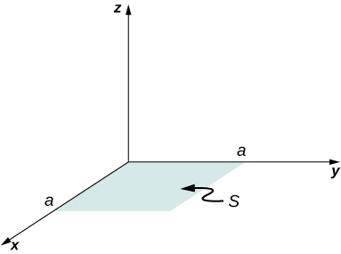
Repeat the preceding problem, with
A circular area S is concentric with the origin, has radius a, and lies in the yz-plane. Calculate for
(a) Calculate the electric flux through the open hemispherical surface due to the electric field (see below). (b) If the hemisphere is rotated by around the x-axis, what is the flux through it?
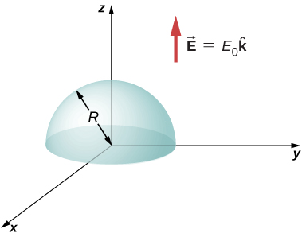
a. ; b. zero, since the flux through the upper half cancels the flux through the lower half of the sphere
Suppose that the electric field of an isolated point charge were proportional to rather than Determine the flux that passes through the surface of a sphere of radius R centered at the charge. Would Gauss’s law remain valid?
The electric field in a region is given by where and What is the net charge enclosed by the shaded volume shown below?
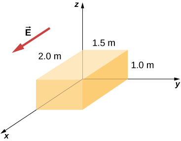
; There are two contributions to the surface integral: one at the side of the rectangle at and the other at the side at ;
where the minus sign indicates that at , the electric field is along positive x and the unit normal is along negative x. At , the unit normal and the electric field vector are in the same direction: .
Two equal and opposite charges of magnitude Q are located on the x-axis at the points +a and –a, as shown below. What is the net flux due to these charges through a square surface of side 2a that lies in the yz-plane and is centered at the origin? (Hint: Determine the flux due to each charge separately, then use the principle of superposition. You may be able to make a symmetry argument.)
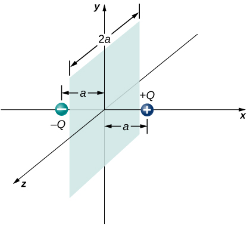
A fellow student calculated the flux through the square for the system in the preceding problem and got 0. What went wrong?
didn’t keep consistent directions for the area vectors, or the electric fields
A piece of aluminum foil of 0.1 mm thickness has a charge of that spreads on both wide side surfaces evenly. You may ignore the charges on the thin sides of the edges. (a) Find the charge density. (b) Find the electric field 1 cm from the center, assuming approximate planar symmetry.
Two pieces of aluminum foil of thickness 0.1 mm face each other with a separation of 5 mm. One of the foils has a charge of and the other has . (a) Find the charge density at all surfaces, i.e., on those facing each other and those facing away. (b) Find the electric field between the plates near the center assuming planar symmetry.
a. , on one and on the other; b.
Two large copper plates facing each other have charge densities on the surface facing the other plate, and zero in between the plates. Find the electric flux through a rectangular area between the plates, as shown below, for the following orientations of the area. (a) If the area is parallel to the plates, and (b) if the area is tilted from the parallel direction. Note, this angle can also be
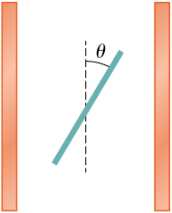
The infinite slab between the planes defined by and contains a uniform volume charge density (see below). What is the electric field produced by this charge distribution, both inside and outside the distribution?
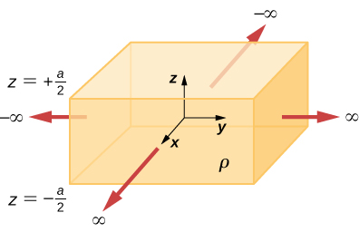
Construct a Gaussian cylinder along the z-axis with cross-sectional area A.
,
A total charge Q is distributed uniformly throughout a spherical volume that is centered at and has a radius R. Without disturbing the charge remaining, charge is removed from the spherical volume that is centered at (see below). Show that the electric field everywhere in the empty region is given by
where is the displacement vector directed from
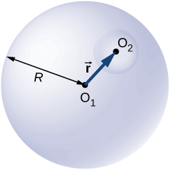
A non-conducting spherical shell of inner radius and outer radius is uniformly charged with charged density inside another non-conducting spherical shell of inner radius and outer radius that is also uniformly charged with charge density . See below. Find the electric field at space point P at a distance r from the common center such that (a) (b) (c) (d) and (e) .
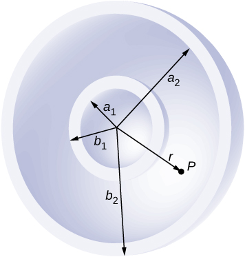
a. ;
b. ;
c. ;
d. ; e. 0
Two non-conducting spheres of radii and are uniformly charged with charge densities and respectively. They are separated at center-to-center distance a (see below). Find the electric field at point P located at a distance r from the center of sphere 1 and is in the direction from the line joining the two spheres assuming their charge densities are not affected by the presence of the other sphere. (Hint: Work one sphere at a time and use the superposition principle.)
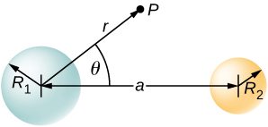
A disk of radius R is cut in a non-conducting large plate that is uniformly charged with charge density (coulomb per square meter). See below. Find the electric field at a height h above the center of the disk. (Hint: Fill the hole with
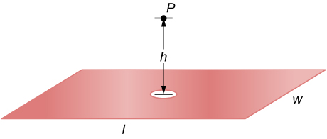
Electric field due to plate without hole: .
Electric field of just hole filled with .
Thus, .
Concentric conducting spherical shells carry charges Q and –Q, respectively (see below). The inner shell has negligible thickness. Determine the electric field for (a) (b) (c) and (d)
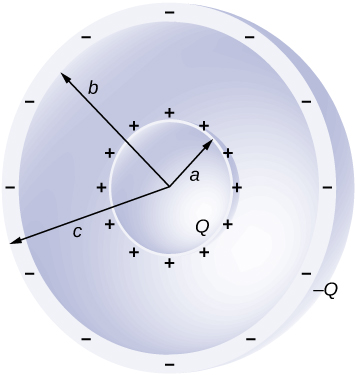
Shown below are two concentric conducting spherical shells of radii and , each of finite thickness much less than either radius. The inner and outer shell carry net charges and respectively, where both and are positive. What is the electric field for (a) (b) and (c) (d) What is the net charge on the inner surface of the inner shell, the outer surface of the inner shell, the inner surface of the outer shell, and the outer surface of the outer shell?
a. ; b. ; c. ; d.
A point charge of is placed at the center of an uncharged spherical conducting shell of inner radius 6.0 cm and outer radius 9.0 cm. Find the electric field at (a) , (b) , and (c) . (d) What are the charges induced on the inner and outer surfaces of the shell?
Challenge Problems
The Hubble Space Telescope can measure the energy flux from distant objects such as supernovae and stars. Scientists then use this data to calculate the energy emitted by that object. Choose an interstellar object which scientists have observed the flux at the Hubble with (for example, Vega[footnote]), find the distance to that object and the size of Hubble’s primary mirror, and calculate the total energy flux. (Hint: The Hubble intercepts only a small part of the total flux.)
Given the referenced link, using a distance to Vega of m[footnote] and a diameter of 2.4 m for the primary mirror,[footnote] we find that at a wavelength of 555.6 nm, Vega is emitting at that wavelength. Note that the flux through the mirror is essentially constant.
Re-derive Gauss’s law for the gravitational field, with directed positively outward.
An infinite plate sheet of charge of surface charge density is shown below. What is the electric field at a distance x from the sheet? Compare the result of this calculation with that of worked out in the text.
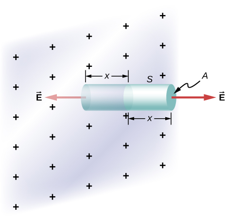
The symmetry of the system forces to be perpendicular to the sheet and constant over any plane parallel to the sheet. To calculate the electric field, we choose the cylindrical Gaussian surface shown. The cross-section area and the height of the cylinder are A and 2x, respectively, and the cylinder is positioned so that it is bisected by the plane sheet. Since E is perpendicular to each end and parallel to the side of the cylinder, we have EA as the flux through each end and there is no flux through the side. The charge enclosed by the cylinder is so from Gauss’s law, and the electric field of an infinite sheet of charge is
in agreement with the calculation of in the text.
A spherical rubber balloon carries a total charge Q distributed uniformly over its surface. At , the radius of the balloon is R. The balloon is then slowly inflated until its radius reaches 2R at the time Determine the electric field due to this charge as a function of time (a) at the surface of the balloon, (b) at the surface of radius R, and (c) at the surface of radius 2R. Ignore any effect on the electric field due to the material of the balloon and assume that the radius increases uniformly with time.
Find the electric field of a large conducting plate containing a net charge q. Let A be area of one side of the plate and h the thickness of the plate (see below). The charge on the metal plate will distribute mostly on the two planar sides and very little on the edges if the plate is thin.
There is Q/2 on each side of the plate since the net charge is Q: ,
Glossary
free electrons
also called conduction electrons, these are the electrons in a conductor that are not bound to any particular atom, and hence are free to move around
![Figure shows a sphere and a charge q some distance away from it. The side of the sphere facing q is labeled A and the opposite side is labeled B. The inner surfaces of the sphere on sides A and B are labeled minus sigma A and plus sigma B respectively. A point P is on the sphere. Two arrows originate from P. They are labeled vector E subscript A and vector E subscript B. A dotted line bisects the angle formed by the two and connects P to q. A third arrow originates from P and points in the direction opposite to q. This is labeled vector E subscript q.](CNX_UPhysics_23_04_PolEField.jpg)
![A figure on the left shows a shaded circle with a cavity in it. A rod with a ball at the end is inserted in the cavity in such a way that it does not touch the shaded circle. The ball has a plus sign on it. The cavity has minus signs around it. The shaded circle has plus signs outside it. An arrow points from this figure to a figure on the right. The arrow is labeled touch inside cavity. The figure on the right is similar to the figure on the left, except that the ball is touching the edge of the cavity. There are no signs on the ball or around the cavity. The outside of the shaded circle has plus signs.](CNX_UPhysics_23_04_InsideSurf.jpg)

![Figure a shows a metal sphere with a cavity within it. The sphere is labeled vector E equal to zero. It has plus signs around it. The cavity has minus signs around it. A positive charge plus q is within the cavity. Figure b shows the same metal sphere with a cavity in it. The sphere is labeled vector E equal to zero. There is nothing within the cavity. A positive charge labeled plus q is outside the sphere. The side of the sphere facing q has minus signs on it. The opposite side has plus signs on it.](CNX_UPhysics_23_04_ChargeIn.jpg)
![Figure shows a flattened sphere, labeled vector E equal to zero. It has two spherical cavities within it. Its outer surface of the flattened sphere is labeled no induced charge outside. The left cavity has a negative charge q inside it, on the left. The left surface of this cavity has many plus signs on it and the right surface has a single plus sign on it. The right cavity has a positive charge q inside it, on the right. The right surface of this cavity has many minus signs on it and the left surface has a single minus sign on it.](CNX_UPhysics_23_04_DoublCharg.jpg)

![A cylinder goes through a hole at the center of a plate of thickness h. The plate has plus signs on its edge. The cylinder is labeled Gaussian pill box. The portion of the cylinder on the right side of the plate is of length z. Two arrows from its flat surface point outward, perpendicular to the surface. These are labeled vector E subscript P and delta vector A. The flat surface of the cylinder to the left of the plate has two arrows perpendicular to it, pointing outward. These are labeled mod vector E equal to mod vector E subscript P and delta vector A.](CNX_UPhysics_23_04_Challenge_img.jpg)